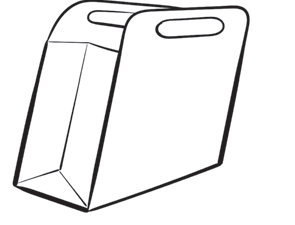
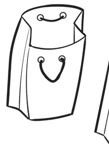
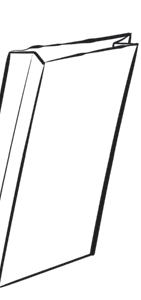

- Hard paper such as manila, lightweight board, clips or pins, and a table;
- Paper glue, light and heavy glue, and a brush;
- Clean water, watercolours, and large boxes; and
- Samples of envelopes, boxes, and bags of different sizes and shapes.
Making envelopes and bags
Envelopes and bags can be made using scraps of various types of paper materials. These envelopes and bags can be in different shapes depending on their intended use. Figures 1 and 2 show examples of the different shapes of envelopes and bags.





Steps for making envelopes
- Take various samples of envelopes and bags of different sizes;
- Examine the parts joined with glue. Soften those parts with water;
- After three to ten minutes, peel them apart. You will notice they come apart easily;
- Add water where it seems difficult to peel. Never use force;
- Unfold and stretch the bags or envelopes properly;
- Spread them out and let them dry for a while.